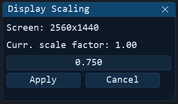

Architecture Overview¶
This page describes the internal architecture of Pipeline Creator : how the application starts, manages state, handles scaling, and routes data between modules.
Boot Sequence¶
The application lifecycle starts at main.py and proceeds through four distinct phases:
graph TD
subgraph Boot["1. Startup, Config & Pre-GUI Init"]
A["main.py Entry\n(faulthandler, frozen -m, DPI, freeze_support)"] --> B["Load config.json via ConfigManager"]
B --> C["Launch Splash screen (if Splash.enabled)"]
C --> C1["Apply working_directory & configure loguru"]
C1 --> C2["Check previous session crash\n(crash_detection)"]
end
subgraph DPG["2. GUI Context & Theme"]
C2 --> D["Create DPG Context & mark_session_start"]
D --> E["Detect primary display (display_scaling)"]
E --> F["Create & setup DPG Viewport (85% screen)"]
F --> G["Load UI Theme & consola_awesome.ttf"]
end
subgraph Mount["3. Modules, UI Mount & Startup Session"]
G --> H["Preload tutorial assets"]
H --> I["Scan & validate modules\n(get_available_modules)"]
I --> J["Init FusionManager, NodeEditor & MainWin"]
J --> K["Show Viewport & close Splash"]
K --> L["Startup Modals (pump_frames=True):\nHealth Check -> Crash Popup -> Login"]
L --> M["Apply mode visibility & start SystemTray"]
M --> N["Run CLI/default automation script,\nload default_pipeline, or show StartupDialog"]
end
subgraph Runtime["4. Application Loop & Cleanup"]
N --> O["Start Main Render Loop"]
O --> P["Every 0.2s: adapt_to_display if moved\n+ automation_manager.process_pending_steps\n+ dpg.render_dearpygui_frame"]
P --> O
P --> Q["Exit on close / close_requested:\nstop Tray & MkDocs, clear_registry, destroy_context"]
endKey Boot Stages¶
- Pre-GUI & Self-Execution Setup: Before initializing DearPyGui,
main.pyenablesfaulthandler(fault.log), handles frozen/Nuitka self-execution (-m mkdocs,-m pip,runpy), sets WindowsSetProcessDpiAwareness(2)andmultiprocessing.freeze_support(), and loadsconfig/config.jsonfirst so every subsequent stage can read configuration flags. - Isolated Splash: A
tkinter-based splash screen runs in a separate process (core/splash.py) so it stays animated while configuration, logging, DearPyGui context setup, theme loading, and module scanning execute in the main process. - Crash Tracking: If
General.check_crash_on_bootis enabled,crash_detection.previous_session_crashed()inspectslogs/app.logbeforemark_session_start()writes the new session marker (once the DPG context exists forlog_viewer.sink). If an abnormal exit is detected, the crash recovery popup is shown at boot. Normal shutdown logs"Pipeline Creator closed successfully". - Deferred Module Discovery:
get_available_modules(force_reload=True)runs after the DearPyGui context, viewport, and theme are ready, ensuring module metadata, validation, and optional preloading initialize cleanly. - Frame Pumping for Startup Dialogs: Blocking startup modals (
ModuleHealthManager, crash recovery popup,LoginDialog, andStartupDialog) run before the main render loop usingpump_frames=True, manually callingautomation_manager.process_pending_steps()anddpg.render_dearpygui_frame()until dismissed.
App State (app_state.py)¶
A global singleton that tracks the session context, accessible from any module. You can also define and add custom attributes to this singleton if your modules need to exchange global status or state flags between each other:
from core.app_state import app_state
# Read the current mode
if app_state.mode == "dev":
show_debug_panel()
# Check if login is complete
if app_state.login_done:
enable_workspace_features()
| Attribute | Type | Description |
|---|---|---|
username |
str |
The logged-in profile name |
mode |
str |
Privilege mode: "user" | "advanced" | "dev" |
login_done |
bool |
Blocks UI bypass before the login dialog completes |
close_requested |
bool |
Set to True to trigger graceful shutdown |
Display Scaling (display_scaling.py)¶
Pipeline Creator adapts layouts and font sizes dynamically when running on screens with different DPI ratings or when the window is moved to a different monitor.
Percentage-Based Geometry¶
Window positions and sizes are saved as screen percentages rather than pixel values. This makes pipelines portable across different resolutions:
pos_pct = (pos_px / viewport_size) × 100.0
On load, percentages are re-multiplied by the current viewport size to recover pixel positions.
Multi-Monitor Adaptation¶
In the main render loop, the viewport position is cached each frame. If the window moves to a different monitor:
display_scaling.adapt_to_display()detects the new monitor's native resolution.- A scale factor is computed relative to the 1080p baseline (e.g.,
2.0for 4K). - Fonts and window bounds are proportionally rescaled.
You can also trigger this manually via Tools → Adapt Display Scaling.

Manual Scaling Adjustment
The scaling control slider allows you to apply a manual scaling multiplier on top of the automatic DPI calculation, enabling you to manually enlarge or shrink the final rendered UI layout.
Fonts (merge_fonts.py)¶
By default, the program uses the Consolas font (consola.ttf) for text rendering. To enrich the graphical user interface, FontAwesome is also utilized to display icons. However, DearPyGui is unable to use multiple font files simultaneously on the same item; it can only switch between fonts.
To overcome this limitation, the script /tools/merge_fonts.py uses fonttools to merge the Unicode character mappings of both fonts, creating a hybrid font called consola_awesome.ttf. This custom unified font retains Consolas for text rendering while embedding FontAwesome's icon glyphs. This allows any module to display icons inline next to text by referencing standard FontAwesome Unicode characters (which can be found on fontawesome.com).
Module Registry (module_registry.py)¶
The registry manages two complementary maps:
- Available Modules (
_AVAILABLE_MODULES_CACHEviaget_available_modules()): Discovered module classes (orLazyModuleProxywrappers) located in/modules, exposed so the Node Editor can list and instantiate them. - Active Instances (
MODULES_REGISTRY): Live module instances currently open in the workspace, indexed byUUID.
This discovery and validation pipeline runs automatically during startup (after DearPyGui initialization) and can reuse results from .cache/health_check_cache.json for unmodified files. Directories containing __init__.py are treated as local Python packages and registered with LocalPackagesFinder, while requirements.txt files are scanned by dependency_manager. To be exposed in the Node Editor, modules must pass dependency checks and adhere to the Developer Best Practices.
Discovery Pipeline¶
graph TD
A["Scan /modules folder\n(_discover_module_files)"] --> B["Register __init__.py subpackages\n& scan requirements.txt"]
B --> C{"skip_import_validation?"}
C -- No --> D["Static AST import check\n(uses health_check_cache)"]
D --> E{"Dependencies met?"}
E -- No --> F["Report missing deps & skip"]
E -- Yes --> G{"preload_modules?"}
C -- Yes --> G
G -- False --> H["AST metadata + validation\n-> wrap in LazyModuleProxy"]
G -- True --> I["Load via importlib & check EXPORTED_CLASS"]
I --> J["Validate module (if enabled)"]
H --> K{"Valid?"}
J --> K
K -- No --> L["Block & log errors"]
K -- Yes --> M["Register in _AVAILABLE_MODULES_CACHE"]
M --> N["Instantiated into MODULES_REGISTRY\nby UUID when added to canvas"]Static Dependency Pre-Check & Lazy Loading¶
Before importing any module file, the registry performs an AST (Abstract Syntax Tree) scan (cached in .cache/health_check_cache.json) to extract import and from ... import statements and detect missing packages before attempting to execute the file. When General.preload_modules is false, modules are registered as LazyModuleProxy objects using statically extracted metadata (EXPORTED_CLASS, EXPORTED_NAME, docstring) and only imported on first instantiation.
Key Registry Functions¶
| Function | Description |
|---|---|
get_available_modules() |
List all discovered module classes / LazyModuleProxy entries |
get_registered_modules() |
List all active module instances from MODULES_REGISTRY |
scan_modules_health() |
Run a full dependency and AST validation scan (with cache support) |
load_workspace(path) |
Deserialize and reconstruct a flow JSON file |
export_workspace(path) |
Serialize the current graph to a flow JSON file |
apply_view(mode) |
Apply the saved window layout for a privilege mode |
Module Health Check (module_health_manager.py)¶
During startup discovery (unless General.skip_import_validation is true or an automation script is running) and on manual triggers via Tools → Check Dependencies, ModuleHealthManager coordinates dependency and static code checks across all discovered modules. If issues are found (or when run manually), it displays a tabbed Module Health Check dialog (pump_frames=True at boot).
Issues determine whether a module is loaded or excluded from the available modules registry:
Missing Dependencies Tab¶
If a module references Python libraries or requirements.txt packages that are not installed on the system, the registry blocks the module from loading to prevent runtime ImportError crashes.
* Auto-Recovery: Lists missing packages with an Install button per package and an Install All button triggering pip install.
* Requirement: Once installation completes, restart the application to reload the new packages.
Validation Tab¶
Displays violations of the Developer Best Practices discovered during static code analysis:
- ValidationLevel.WARNING: Minor issue; the module is marked with a warning and remains usable in the Node Editor.
- ValidationLevel.ERROR: Critical violation (e.g., duplicate DearPyGui tags without
self.UUID); the module is excluded from loading until corrected.
DPG Callbacks Tab¶
When Nuitka/compiled-mode callback signature issues are detected (callbacks missing *args / *args, **kwargs), this tab lists each affected method and provides one-click Auto-fix buttons (per module or for all modules).
(Manual scans with no errors or warnings show an All Healthy tab, along with Rescan (Cached) and Force Full Rescan (Clear Cache) actions.)
Node Editor Graph System (node_editor.py)¶
Once modules are discovered and validated, they can be instantiated inside the Node Editor visual graph. The Node Editor provides a zoomable, pannable graphical canvas built on top of DearPyGui where users organize and interconnect module nodes. It coordinates:
- Connection Type Validation: Wires drawn between terminals are automatically validated against
IOTypesto ensure data compatibility. - Workspace Persistence: The entire visual state, module parameters, node coordinates, and connection paths are serialized to JSON.
- Interaction Handlers: Double-clicking a node brings its GUI window to the foreground, while right-clicking opens actions such as edit, rename, delete, and tutorials.
The visual graph is managed by NodeEditor, which inherits from five mixins:
graph BT
NodeHighlightMixin["NodeHighlightMixin\nVisual theme coloring"] --> NodeEditor
NodePerfProfilerMixin["NodePerfProfilerMixin\nLive flow & latency profiling"] --> NodeEditor
NodePopupMixin["NodePopupMixin\nFuzzy search popup"] --> NodeEditor
NodeCallbacksMixin["NodeCallbacksMixin\nDPG mouse & link events"] --> NodeEditor
NodeSerializationMixin["NodeSerializationMixin\nSave & load workspaces"] --> NodeEditor
classDef mixin fill:#1a4d4d,stroke:#33b2b2,stroke-width:2px;
class NodeHighlightMixin,NodePerfProfilerMixin,NodePopupMixin,NodeCallbacksMixin,NodeSerializationMixin mixin;- NodeHighlightMixin: Governs highlighting downstream nodes, dimming unconnected modules, drawing dashed virtual links between wireless Link channels, and respecting Gate pass-through states during downstream traversal.
- NodePerfProfilerMixin: Manages in-canvas live flow profiling, pulsing active wires/nodes, saturation indicators, and per-node telemetry popups/reports.
- NodePopupMixin: Builds the right-click module selection menu and manages the fuzzy search list (including built-in
Link In,Link Out,Gate,Working Directory, andPropagation Testernodes). - NodeCallbacksMixin: Processes link creation, link deletion, double-clicks, single-input constraints for Gate nodes, dynamic IOType deduction, and warning modals for incompatible connections.
- NodeSerializationMixin: Exports active configurations and built-in nodes (
Link In,Link Out,Gate,Working Directory,Propagation Tester) to file and handles regenerating the graph and rewiring connections upon launch.